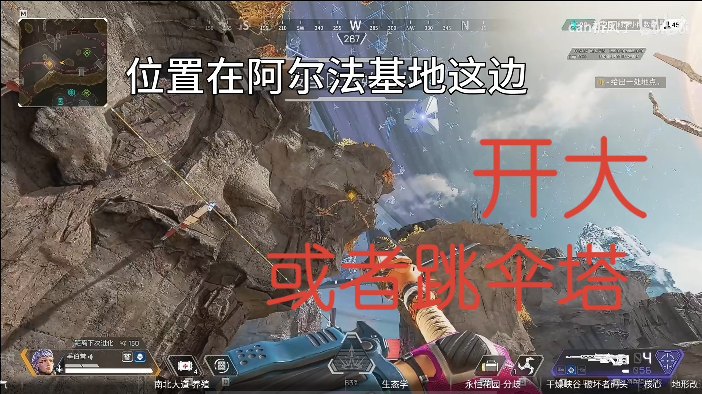

​<html>
<head>
    <link rel="stylesheet" href="https://unpkg.com/leaflet@1.9.4/dist/leaflet.css"
   integrity="sha256-p4NxAoJBhIIN+hmNHrzRCf9tD/miZyoHS5obTRR9BMY="
   crossorigin=""/>

    <style>
    #image-map {
        width: 100%;
        height: 100%;
    }
    </style>

    </head>

    <body>
    <div id="image-map"></div>
    <script src="https://unpkg.com/leaflet@1.9.4/dist/leaflet.js"
   integrity="sha256-20nQCchB9co0qIjJZRGuk2/Z9VM+kNiyxNV1lvTlZBo="
   crossorigin=""></script>
    <script>
        // 地图缩放
        var map = L.map('image-map', {
            minZoom: 1,
            maxZoom: 4,
            center: [0, 0],
            zoom: 1,
            crs: L.CRS.Simple
        });
        // 地图参数
        var w = 3000,
            h =3000,
            url = './images/map/残月.jpg';
        // 定位地图
        var southWest = map.unproject([0, h], map.getMaxZoom()-1);
        var northEast = map.unproject([w, 0], map.getMaxZoom()-1);
        var bounds = new L.LatLngBounds(southWest, northEast);
        L.imageOverlay(url, bounds).addTo(map);
        map.setMaxBounds(bounds);
        //测试标点位置
        var popup = L.popup();
function onMapClick(e) {
    popup
        .setLatLng(e.latlng)
        .setContent("You clicked the map at " + e.latlng.toString())
        .openOn(map);
}
map.on('click', onMapClick);
//标点本体

var marker = L.marker([-206.810937, 195.999969]).addTo(map);
marker.on('click', function () {
            var popup = L.popup().setLatLng([-206.810937, 195.999969]).setContent
            ('</div>').openOn(map); });


    </script>

    </body>
</html>